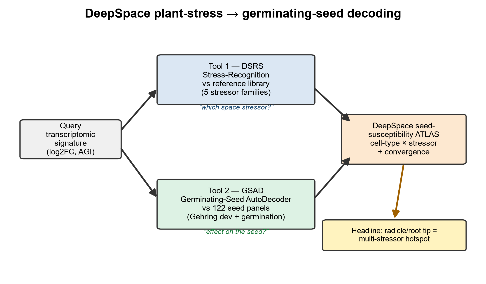
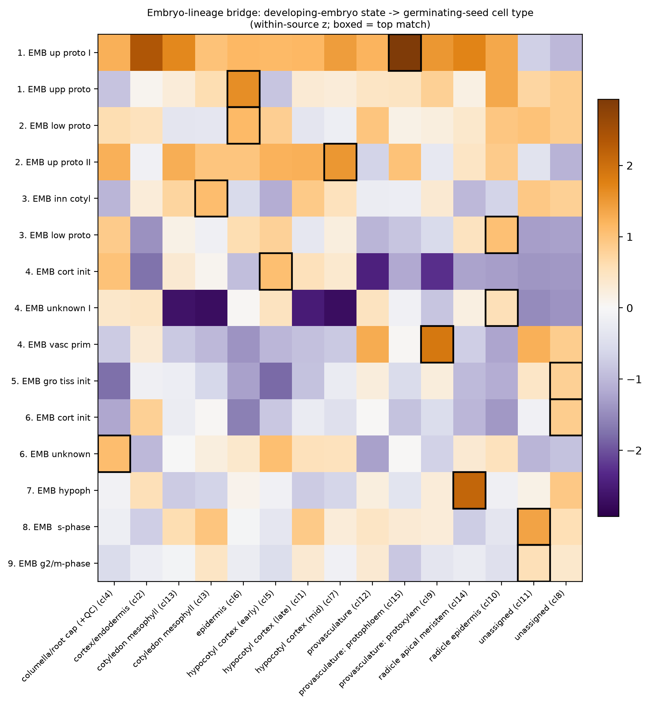
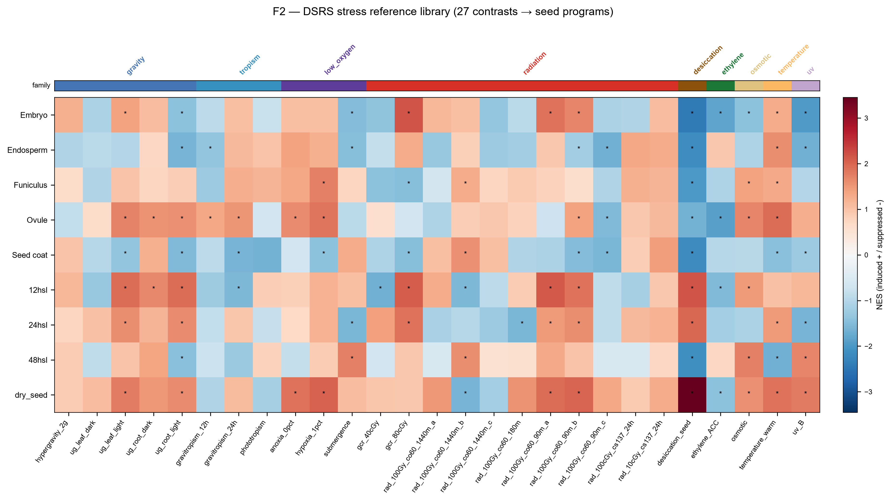
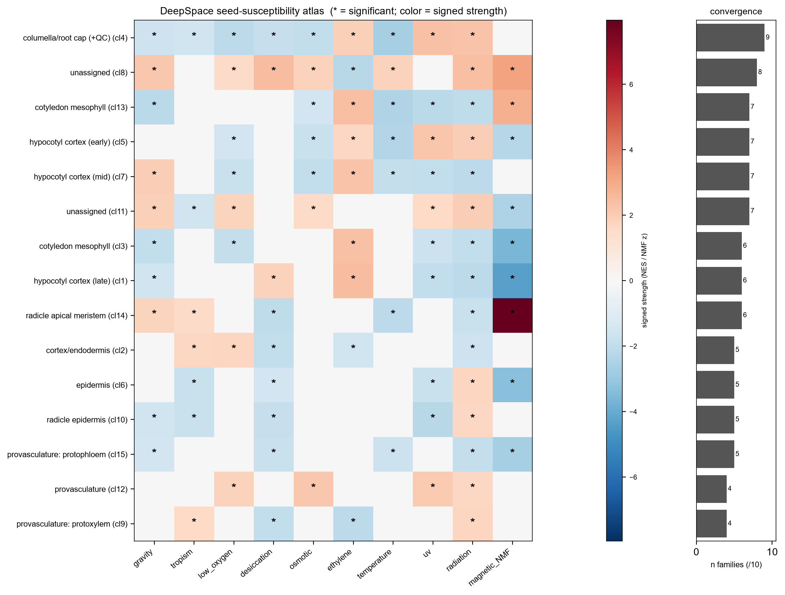
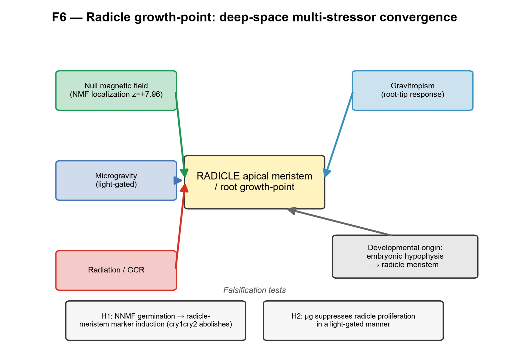

Seeds are the practical propagule for off-world agriculture — but the seed is the least-studied stage
Deep-space environments combine microgravity, chronic ionizing radiation, a near-absent or altered magnetic field, and the confined, potentially hypoxic gas environment of flight hardware — and the loss of a stable gravity vector removes the gravitropic set-point that organises seedling establishment. Each stressor has documented effects on adult plant transcriptomes, but the consequences for the dry/dormant and germinating seed — the stage that determines whether a crop establishes at all — are poorly resolved, because spaceflight experiments sample seedlings and organs rather than seeds. This project bridges that gap by projecting stressor signatures onto a single-cell seed reference.

Two reusable, FAIR tools sharing one projection engine
Both tools rank a query signature by log2 fold-change and project it onto the seed panels by pre-ranked gene-set enrichment. They differ only in what they ask of the result.
DSRS — DeepSpace Stress-Recognition System
Given a transcriptomic signature, recognise which space stressor it most resembles across the reference families — gravity, radiation, low-oxygen, tropism, desiccation, osmotic, ethylene, temperature and UV.
GSAD — Germinating-Seed AutoDecoder
Given a bulk transcriptome, predict its effect on the dry / germinating seed — a per cell-type, per-tissue, per-stage susceptibility profile against the 123-panel reference.
Run it
Input is a two-column CSV: gene (AGI/TAIR, e.g. AT1G01010) and log2FC.
# install cd tools && pip install -e . # which space stressor does my signature resemble? deepspace dsrs my_signature.csv --out matches.csv # predicted effect on the dry / germinating seed deepspace gsad my_signature.csv --out seed_susceptibility.csv
# or from Python import deepspace top, fam = deepspace.dsrs.recognize("my_signature.csv") # which stressor? seed = deepspace.gsad.decode("my_signature.csv") # effect on the seed seed["celltype"].head() # ranked cell-type susceptibility
Outputs are predicted concordance (signature transfer across tissue and stage), not proven causation — every claim carries an evidence tier and a falsification test.
A single-cell seed reference that recovers textbook lineages
The reference is a 123-panel library — 122 single-cell marker panels from the developmental seed atlas (snRNA-seq, 3/5/7 days after pollination) and the germination atlas (scRNA-seq, 12/24/48 h post-imbibition), plus a bulk dry-seed anchor. Panels reproduce canonical markers (oleosins and cruciferin for embryo, BANYULS for the inner-integument endothelium).
As a stringent positive control, the decoder was restricted to embryo cells and asked which germinating-seed cell type each developing-embryo state maps onto. It independently recovers established developmental lineages from transcriptomes alone:
- protoderm → epidermis
- hypophysis → radicle apical meristem — placing the embryonic hypophysis as the developmental origin of the radicle growth-point
- vascular primordium → provasculature
- inner cotyledon → cotyledon mesophyll, and cortical initials → hypocotyl cortex

A 27-contrast, ten-family deep-space stress library
Genome-wide signatures span ten stressor families, assembled from public NASA OSDR and GEO/AtGenExpress datasets. A recurrent theme: stressed adult/vegetative tissue transcriptionally resembles the early-germination (12 h) state, suggesting a shared stress-engaged program at the onset of germination.
| Family | Represented by |
|---|---|
| Gravity | spaceflight microgravity (root & leaf) + 2 g hypergravity — the µg↔1 g↔hypergravity axis |
| Radiation | GCR-relevant low-dose, acute γ |
| Tropism | gravitropism, phototropism |
| Low-oxygen | hypoxia, anoxia, submergence |
| Desiccation | seed maturation drying |
| Osmotic | mannitol |
| Ethylene | ACC |
| Temperature | warm / thermomorphogenesis |
| UV | UV-B |
| Magnetic / null field | curated NMF panel, handled by expression-localization (not GSEA) |

The root tip is the multi-stressor convergence apex
Scoring each germinating-seed cell type by how many of the ten stressor families significantly target it — a family-level metric so no single data-rich family dominates — gives an unambiguous result.
Columella / root cap — 9 of 10 families
Targeted by more stressor families than any other biologically-defined germinating-seed cell type.
Radicle apical meristem
The specific null-magnetic-field target (localization z = +7.96); radicle epidermis completes a broadly susceptible root pole. Hypocotyl cortex and cotyledon mesophyll are secondary hotspots (6–7/10).

Four independent lines converge on the radicle growth-point
- Null magnetic field — NMF-responsive genes localise to the radicle apical meristem (z = +7.96)
- Microgravity — modulates the radicle-meristem program in a light-gated manner
- Gravitropism — itself a root-tip phenomenon, engages the same program
- Development — the structure is founded by the embryonic hypophysis, which the lineage analysis maps directly onto the radicle apical meristem

Every input is public; the pipeline is numbered end-to-end
- Environment. Python ≥3.10 (
pip install -r requirements.txt); R ≥4.4 + SeuratObject to open and export the developmental atlas;cd tools && pip install -e .for thedeepspaceCLI. - Data. Download from accessions listed in
data/data_inventory.csv— developmental seed atlas GSE295007, germination atlas GSE182331 / E-MTAB-12532, microgravity & radiation from NASA OSDR (OSD-120/678/658/…), plus low-oxygen, tropism, hypergravity, desiccation, ethylene, temperature, osmotic and UV series. - Pipeline. Run the numbered scripts
01–30in order — build panels → project each stressor family → NMF localization → bridge/lineage validation → atlas → figures → manuscript. - Use the tools on your own signature with
deepspace dsrs/deepspace gsad.
Determinism: GSEA-prerank uses a fixed seed (42) and 200 permutations. Gene IDs are harmonised to AGI/TAIR. Large raw/derived data are gitignored — regenerate from accessions. Full guide in REPRODUCE.md; the complete living dev log is in PLANNING.md.
Every input is public and traceable
Full provenance is in data/data_inventory.csv. The one exception is the genome-wide null-magnetic-field arrays, which are not publicly deposited — that arm relies on a curated localization-tier gene panel while a request to the source authors is outstanding.
| Role | Dataset | Accession | Repository / platform |
|---|---|---|---|
| Seed reference | Developmental seed atlas (3/5/7 DAP) | GSE295007 | GEO · snRNA-seq |
| Seed reference | Germination atlas (12/24/48 h) | GSE182331 · E-MTAB-12532 | GEO / ArrayExpress · scRNA-seq |
| Gravity — microgravity | Spaceflight root; leaf | OSD-120; OSD-678 | NASA OSDR · RNA-seq |
| Gravity — hypergravity | 2 g vs 1 g callus | GSE29787 | GEO · Agilent GPL9020 |
| Radiation — GCR | Whole seedling 40/80 cGy | OSD-658 | NASA OSDR · RNA-seq |
| Radiation — acute γ | 100 Gy Co-60 time-course | OSD-498/502/508/510 | NASA OSDR · RNA-seq |
| Radiation — low-dose | Cs-137, 10 & 100 cGy | OSD-782 | NASA OSDR · RNA-seq |
| Low-oxygen | Hypoxia/anoxia; submergence | GSE315308; GSE182724 | GEO · RNA-seq |
| Tropism — gravitropism | Root gravistimulation time-course | GSE199142 | GEO · RNA-seq |
| Tropism — phototropism | Auxin/tropic-growth gradient | GSE3847 | GEO · ATH1 GPL198 |
| Desiccation | Seed maturation drying (21 vs 15 DAF) | GSE76015 | GEO |
| Ethylene | ACC 4 h vs 0 h | GSE193833 | GEO |
| Temperature | 27 vs 21 °C (thermomorphogenesis) | GSE303133 | GEO |
| Osmotic; UV-B | Mannitol; UV-B vs control | GSE5622; GSE5626 vs GSE5620 | AtGenExpress · ATH1 GPL198 |
| Magnetic / null field | NNMF arrays (Parmagnani/Maffei 2022; Agliassa/Maffei 2021) | not deposited — curated panel | Journal supplement · localization-tier |
| Cross-check | Mature-root eFP map (Brady et al. 2007) | GSE8934 | GEO · ATH1 GPL198 |
Manuscript, tools, panels and results
Read
- Manuscript — the full npj Microgravity draft (.md / .pdf / .docx)
- Supplementary materials
- Result notes — per-analysis write-ups & tables
Run & build on
- tools/deepspace — the DSRS + GSAD package & CLI
- panels/ — seed cell-type / state marker panels (CSV + GMT)
- scripts/ — the numbered, reproducible pipeline
Cite this work
Released under the MIT license; a Zenodo DOI will be minted on deposit. See CITATION.cff.
Barker, R. DeepSpace Plant-Stress → Germinating-Seed Decoder (DSRS + GSAD)
and seed-susceptibility atlas. v0.1.0. MIT license.
https://github.com/dr-richard-barker/deepspace-seed-stress-decoder
BibTeX
Software / dataset (replace the Zenodo DOI once minted on deposit):
@software{barker_deepspace_2026,
author = {Barker, Richard},
title = {{DeepSpace Plant-Stress to Germinating-Seed Decoder
(DSRS + GSAD) and seed-susceptibility atlas}},
year = {2026},
version = {0.1.0},
license = {MIT},
publisher = {Zenodo},
doi = {10.5281/zenodo.0000000},
url = {https://github.com/dr-richard-barker/deepspace-seed-stress-decoder}
}
Companion manuscript (draft, targeted at npj Microgravity):
@article{barker_seed_susceptibility_2026,
author = {Barker, Richard},
title = {{A cell-type-resolved atlas of deep-space stress susceptibility
in the dry and germinating Arabidopsis seed}},
year = {2026},
journal = {npj Microgravity},
note = {Manuscript in preparation}
}
Author: Richard Barker — Purdue University; The Collaborative Science Environment, PBC. Machine-readable metadata in CITATION.cff.